| 日付 | 2019年2月3日（日） |
|---|---|
| 山域 | 道志山塊 |
| メンバー | 家族（妻、長女・7歳、長男・5歳） |
| 山行形態 | 子連れ日帰り |
| アクセス | 車 |
| ルート (Map) | 観光スポーツ広場 (8:26) - (10:22) 二十六夜山 (11:01) - (11:52) 下尾崎登山口 - (12:40) 観光スポーツ広場 |
道志山塊には二十六夜山という名の山が2つある。
一方には2008年に登り、もう一方もいつか登ろうと思っていたが、
それから11年の歳月が過ぎてしまった。
久々に近場でコースタイムの短い山に登ろうという事で、
いろいろ山を探している間にこの山の存在を思い出し、登ることにする。
こちらは秋山地区にあるため、秋山二十六夜山と呼ばれている。
観光スポーツ広場の駐車場に車を停める。標高520m。
辺り一面雪に覆われている。誰も来るはずがないと思っていたら車がやって来て、
何とグラウンドで野球の練習を始める。
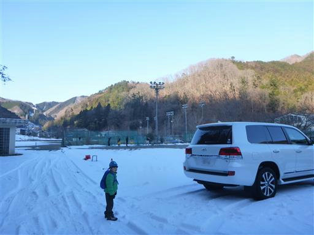
側のプールは凍りついている。

準備を整えて登山開始。
ちょうど観光スポーツ広場から山に向かう道が分かれる。
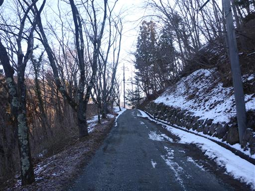
少し登ったところにあるアオゲラの森キャンプ場。
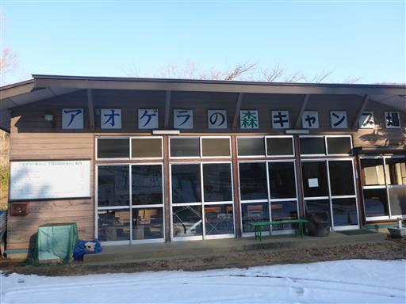
冬なので当然誰もいない。
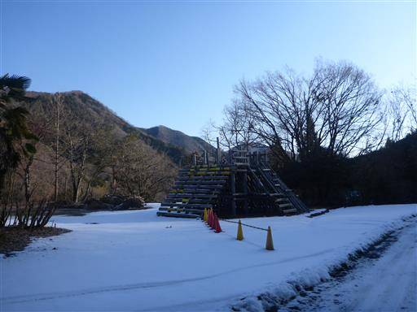
ここから登山道に入っていく。植林地帯の中は雪がない。
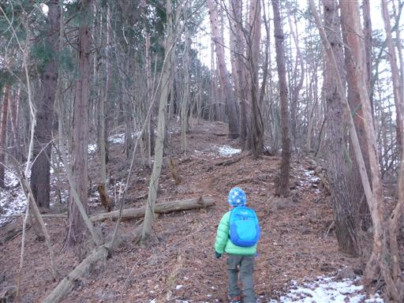
登山道のど真ん中に建つ東屋。
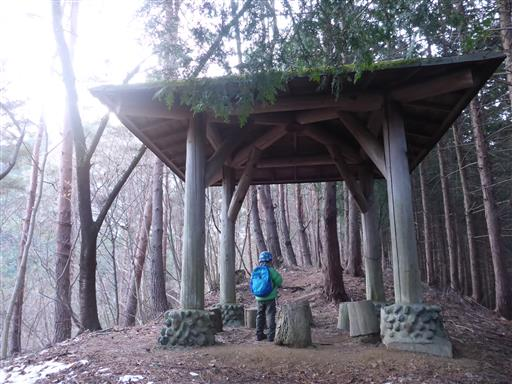
植林地帯を過ぎると登山道は雪に覆われる。非常に滑りやすい雪だ。
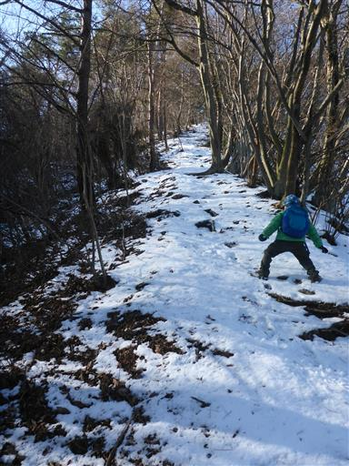
登山道はかなりの急斜面が続く。
スパッツやアイゼンなどの雪山装備を一切持ってきていなかったので、
この斜面を登るのにかなり苦戦する。
雪のある山に登るのは久々なため、装備のことはすっかり忘れてしまっていた…
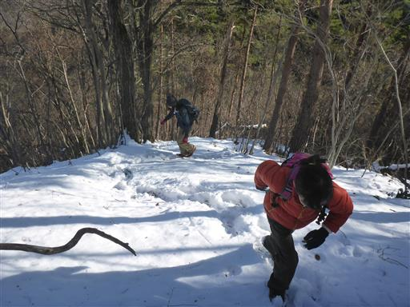
ようやく登山道が平坦になる。
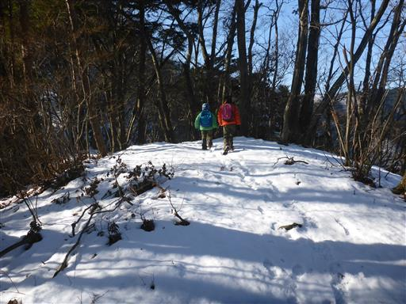
北斜面は全体が雪に覆われている。
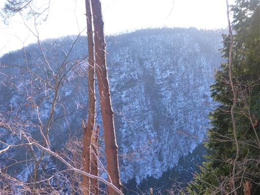
陽の光が差して美しい。傾斜さえきつくなければ、景色を眺めながらのんびり歩ける。
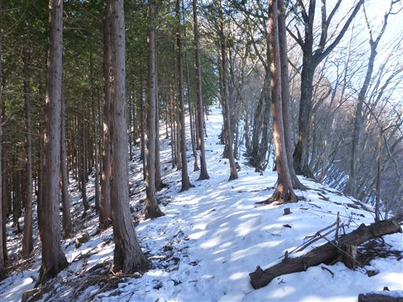
雪が波打っている。幸い山頂近くまで高度を上げても雪の量はあまり増えない。
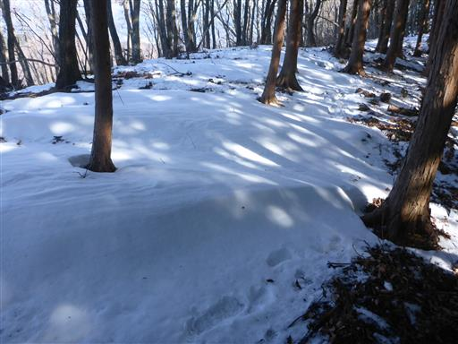
しかし、息子の靴とズボンは雪だらけ。
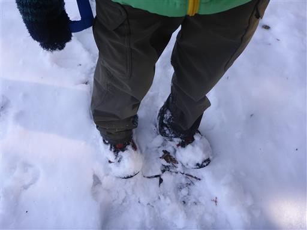
登山靴で踏み固められた雪を拾う。
滑って何度も手をついたり、雪を触って遊んだりしているので、息子の手袋はびしょ濡れだ。
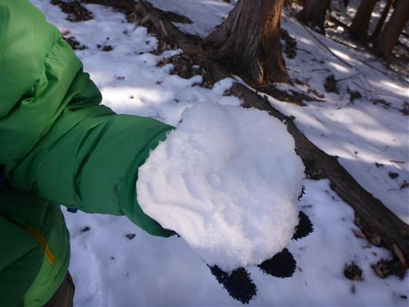
二十六夜山山頂に到着する。標高972m。
想定外の雪でかなり苦戦したが、短いコースが幸いし、何とか登頂できた。
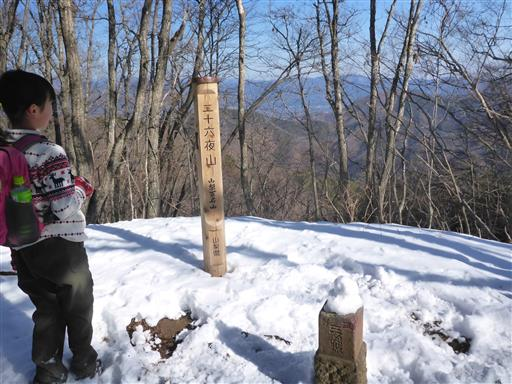
足の雪を払い、手袋を乾かし、さっと昼食を取る。
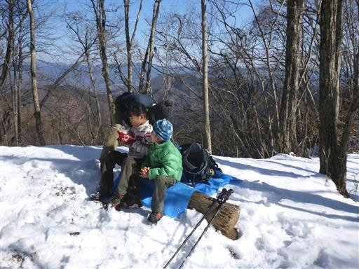
この山は樹林に覆われ全く展望は無い。
さほど晴れないと予想してこの山にしたのだが、思った以上に青空が広がっている。
これならもう少し展望の良い山に行っても良かった。
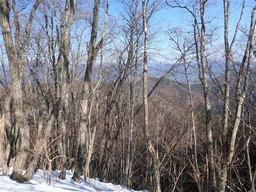
服が濡れているので長居はせず、昼食を取ったらすぐに下山する。
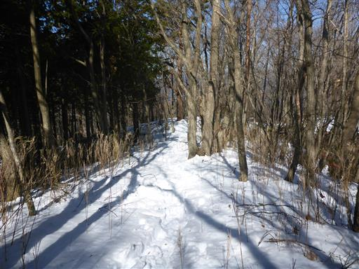
二十六夜塔。古の月待信仰の名残で、山名の由来にもなっている。
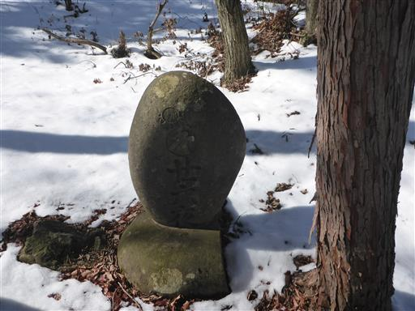
下山は登りとは違う道を歩く。幸いこちらは東側斜面のため、ほとんど雪が無い。
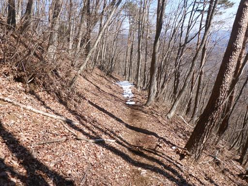
ところどころ雪が残るが問題なし。
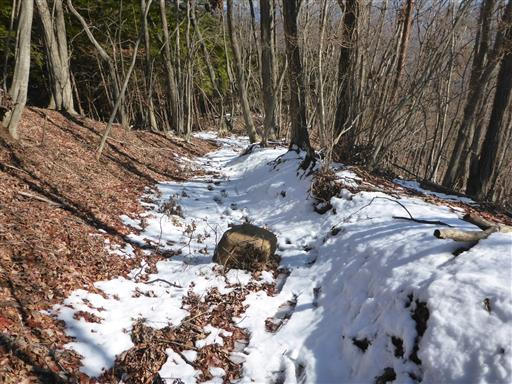
道を塞ぐ倒木。大人はしゃがまないと通過できない。
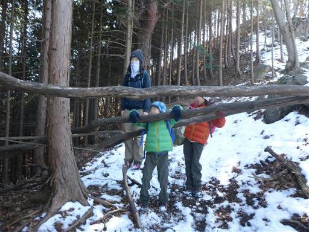
こちらも道のど真ん中にある倒木。
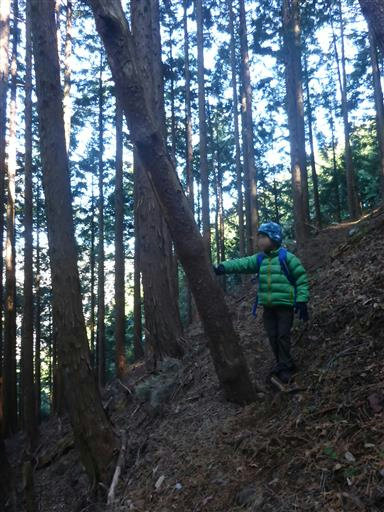
見上げると途中で折れた木が見つかる。
そこで折れて登山道にまっすぐ落ちてきたようだ。
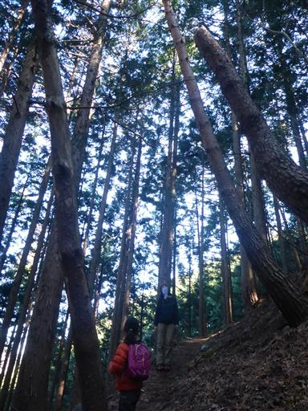
植林地帯に入ると、あちらこちらで上から雪が落ちてくる。
葉の上に降り積もった雪が、解けたり風が吹いたりで落ちてくるのだ。
光を受けて輝く雪と、周囲にこだますカサカサという音は、なかなか幻想的だ。
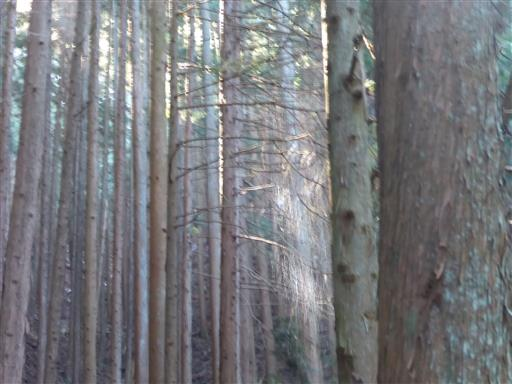
小さな沢を渡る。周囲は寒々しい景色だ。
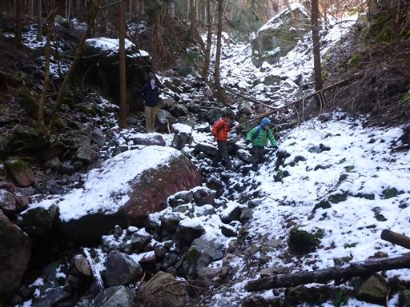
最後に小さな溝を渡る。
向こう側からは見えないが、足場の岩が突き出していて、
何かの拍子に転げ落ちそうだ。
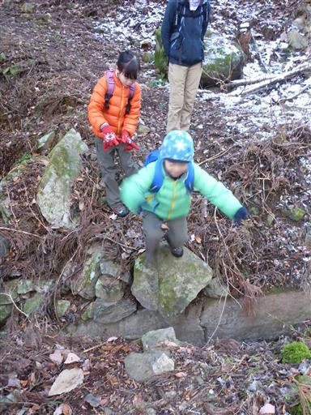
獣害防止のためのフェンスを抜けて無事下山。
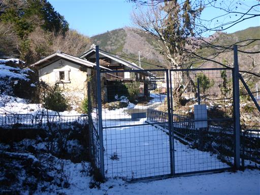
周囲を取り囲む里山、雪の積もった畑、真っ青な空、
どこを見渡しても美しい風景だ。

県道35号を2kmほど歩いて駐車場に向かう。
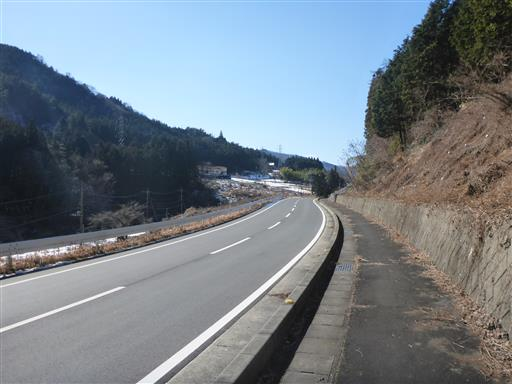
観光スポーツ広場の駐車場に到着。
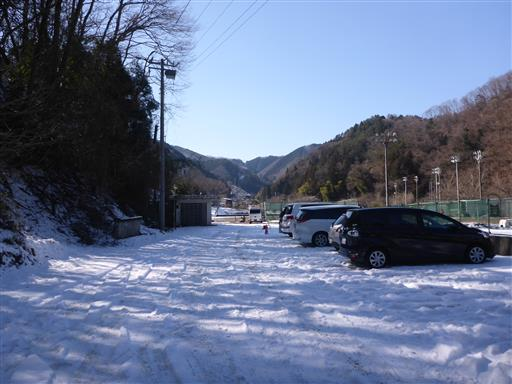
きれいな雪が残っているので、しばらく雪で遊んでから帰ることにする。
子供達は雪を投げたり、雪で車を洗ったりして遊んでいる。
少々雪に苦しめられた登山となったが、子供たちはそれほど苦にせず
雪を楽しんで登ってくれて良かった。
今度雪のある山に行くときはもう少し装備をそろえる必要がありそうだ。